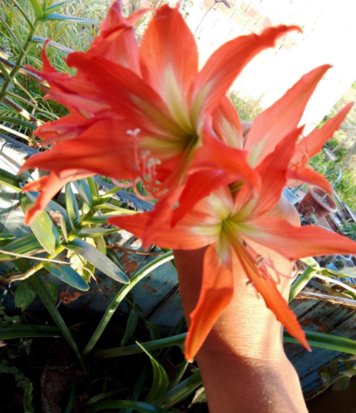
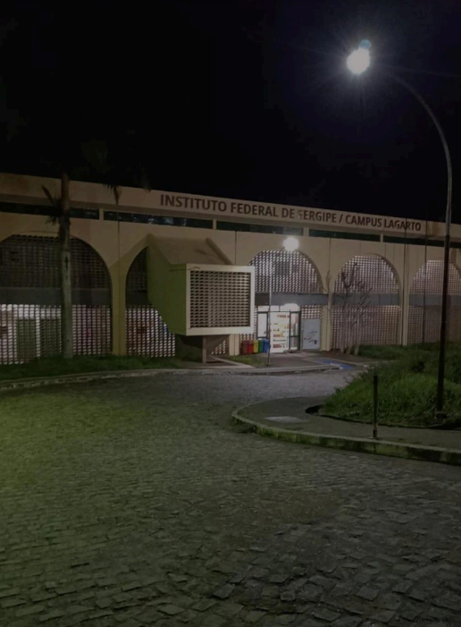

Deyvisson Santos Menezes
2022
Fotografia do pôr do sol no IFS (Instituto Federal de Sergipe - Campus Lagarto). As cores em tons de laranja e azul escuro transmitem a beleza do entardecer.
Deyvisson Santos Menezes
2023
Fotografia do amanhecer em Salgado-SE. No horizonte, as cores em tons de laranja, azul e roxo apresenta-se de uma forma vibrante para os olhos de quem vê.
Deyvisson Santos Menezes
2024
Fotografia do entardecer em Salgado-SE. O céu, em tons de azul e laranja, junto ao caminho e às árvores, transmite uma sensação de paz indescritível.
Maria de Nazaré de Andrade Santos.
2024
Catasetum macrocarpum é uma das espécies de orquídeas pertencentes ao gênero Catasetum, em Lagarto-Se.
Maria de Nazaré de Andrade Santos.
2024
Orquídea Falenópsis Cascata. Nome científico Phalaenopsis hybrid, Ocorre entre a primavera e o verão tendo duração de até 3 meses. Foto tirada no jardim de uma casa em Lagarto-Se.
Maria de Nazaré de Andrade Santos.
2024
Lilium candidum, comummente conhecida como açucena, é uma planta herbácea e bolbosa, pertencente à família das Liliáceas e ao tipo fisionómico dos geófitos. É comummente usada na semiótica da igreja católica, como símbolo da Virgem Maria.

Maria de Nazaré de Andrade Santos.
2024
Hippeastrum striatum é uma espécie de planta bulbosa pertencente à família Amaryllidaceae, com distribuição natural no leste e sul do Brasil.
Maria de Nazaré de Andrade Santos.
2024
Moreia Temos 3 tipos a branca, que é a mais conhecida, a amarela ou creme e a variegata. As florações das mesmas são diferentes, enquanto a Moreia branca se adapta melhor a uma condição de meia-sombra, a amarela precisa de mais sol.
Maria de Nazaré de Andrade Santos.
2024
Catharanthus roseus . Don ou vinca é uma planta ornamental originária de Madagascar, que foi amplamente cultivada em diversos países, inclusive no Brasil, se distribuindo por todas as regiões tropicais e subtropicais.
Maria de Nazaré de Andrade Santos.
2024
Jarro para flores artificiais feito à mão com restos de porcelanato
Maria de Nazaré de Andrade Santos.
2024
Jarro para plantas artificiais feito à mão com restos de cerâmica
2023
Imagem do pôr do sol no povoado Saco da Tapera interior de lagarto-Se.
Maria de Nazaré de Andrade Santos.
2023
:Imagem do amanhecer no povoado Saco da Tapera no interior de Lagarto-Se.
Maria de Nazaré de Andrade Santos.
2023
Iridaceae, na família existem 66 gêneros e 2.444 espécies, das quais 20 gêneros e 198 espécies são nativas do Brasil. Entre essas, encontra-se o gênero Neomarica com 28 espécies, sendo algumas mais populares devido ao comércio de plantas ornamentais para jardins.
Maria de Nazaré de Andrade Santos.
2023
Dryocampa rubicunda, a mariposa do bordo rosado, é uma pequena mariposa norte-americana da família Saturniidae, também conhecida como a grande mariposa da seda. Foi descrito pela primeira vez por Johan Christian Fabricius em 1793. A espécie é conhecida por seu corpo lanoso e coloração rosa e amarela, que varia de creme ou branco a rosa brilhante ou amarelo.
Maria de Nazaré de Andrade Santos.
2023
Automeris é um gênero de mariposas da família Saturniidae, classificada por Jacob Hübner em 1819. Dos gêneros da sub-família Hemileucinae é que possui o maior número de espécies e a mais ampla distribuição no Continente Americano.

José Angelo
2024
Foto da fachada do instituto federal de Sergipe Campus lagarto
José Angelo
2023
Fotografia tirada do começo do dia na Colônia Treze Lagarto-SE, com o céu em tons de laranja.
Izabel Santos Bispo
2024
Fotografia tirada ao final do dia no município de Riachão do Dantas, com o céu em tons de laranja e roxo dominando o horizonte, enquanto as silhuetas das árvores se destacam contra o fundo vibrante.
Wezley Renan Macedo Da Silva
2014
Foto capturada a bordo de um catamarã, navegando pelo Rio São Francisco, nas proximidades da cidade de Piranhas em Alagoas.
Wezley Renan Macedo Da Silva
2014
Uma vista aérea da cidade de Piranhas, em Alagoas
Wezley Renan Macedo Da Silva
2014
Uma imagem da vegetação nas proximidades de Xingó
Estefany Ferreira de Santana
2024
Melão, foto tirada no interior de Simão Dias
Estefany Ferreira de Santana
2024
Urucum, foto tirada no interior de Simão Dias
Andson dos Santos Almeida
2024
Foto tirada do Grupo escolar Sílvio Romero em Lagarto-SE
Estefany Ferreira de Santana
2024
Foto tirada no interior de Simão Dias
Andson dos Santos Almeida
2023
Foto tirada do parlamento de budapeste
Artesanato
Izabel Santos Bispo
2024
Bolsa de crochê feita com linhas brancas e azuis, 85% algodão e 15% outras fibras. Padrão de quadrados com coração.
Desenhos
Deyvisson Santos Menezes
2021
O desenho “Árvore da vida” ilustra de forma simbólica a dualidade da existência humana. Ele traz a ideia de que a vida é composta por momentos de sucesso e alegrias (tons de laranja e amarelo), que remetem a clareza mental, e por momentos de dificuldades e introspecção (tons de azul), que remetem à dúvida. A árvore localiza-se no centro para indicar o equilíbrio entre esses momentos.
Izabel Santos Bispo
2020
O desenho foi criado utilizando principalmente lápis de cor. A imagem retrata uma jovem de costas para um cenário exuberante de natureza.
Izabel Santos Bispo
2021
O desenho representa um esqueleto em uma pose dramática, com os braços estendidos e o corpo levemente inclinado para frente. O fundo é completamente preto, destacando a figura branca do esqueleto.
Artes Digitais
Izabel Santos Bispo
2024
A obra apresenta uma cena noturna em uma região montanhosa. O céu está adornado por um degradê de cores quentes, com tons de laranja e roxo predominando, sugerindo um pôr do sol.
Izabel Santos Bispo
2024
Criada digitalmente, a obra apresenta um céu pintado em tons pastel, com nuvens macias e linhas suaves. A rosa, em preto e branco, destaca-se em primeiro plano, enquanto os pássaros em silhueta cruzam o céu em um movimento.
Poesia
Na terra de sol e de mares profundos
Jefferson Rodrigues Santana
Descrição: Poema em homenagem a Tobias Barreto
Na terra de sol e de mares profundos,
Tobias, com versos, desvela o mundo.
A pena em punho, o coração ardente,
Na rima e na prosa, um eco latente.
Filho do chão, das dores e amores,
Mestre dos sonhos, dos medos e flores.
Com sua voz, traz a luz da razão,
Reflete na arte a alma da nação.
A lua é testemunha das suas canções,
Cantor do povo, das suas emoções.
Versos que dançam, como a brisa ao luar,
Despertam os corações a sonhar.
Tobias, o bardo, em cada estrofe,
Resgata a história, a vida, o trope.
Na terra do sol, onde o mar se abriga,
Teu legado vive, a voz que não liga.
Oh, poeta, guardião da tradição,
Teus versos eternos ecoam na ação.
Em cada palavra, um novo despertar,
Na alma do povo, sempre a brilhar.
Inscrição
Para enviar sua arte para nosso site, clique no link abaixo e preencha o formulário:
Enviar ArteLei De Proteção De Dados
- Coleta de Dados: Informamos aos usuários quais dados são coletados e como são utilizados.
- Finalidade dos Dados: Os dados são utilizados para melhorar os serviços e personalizar a experiência do usuário.
- Segurança: Garantimos medidas para proteger os dados dos usuários.
-
Direitos dos Usuários:
- Acessar seus dados.
- Retificar dados incorretos.
- Solicitar a exclusão dos seus dados.
- Revogar o consentimento para o uso de dados a qualquer momento.
- Contato: Entre em contato para questões relacionadas à proteção de dados.